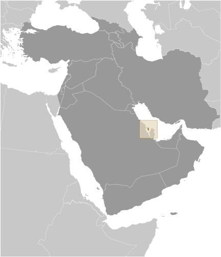
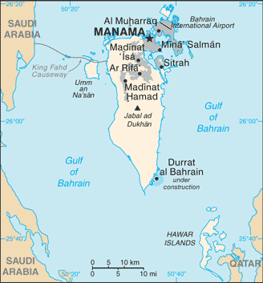
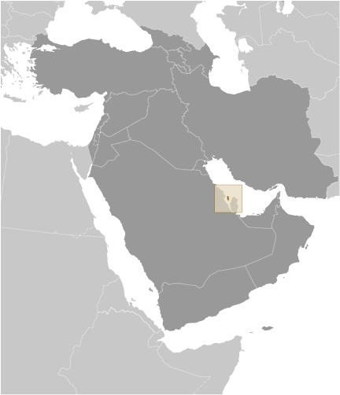
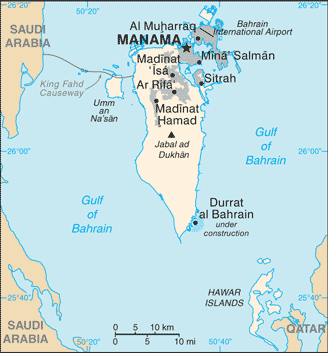

Middle East :: BAHRAIN
Introduction :: BAHRAIN
-
In 1783, the Sunni Al-Khalifa family took power in Bahrain. In order to secure these holdings, it entered into a series of treaties with the UK during the 19th century that made Bahrain a British protectorate. The archipelago attained its independence in 1971. A steady decline in oil production and reserves since 1970 prompted Bahrain to take steps to diversify its economy, in the process developing successful petroleum processing and refining, aluminum production, and hospitality and retail sectors, and also to become a leading regional banking center, especially with respect to Islamic finance. Bahrain's small size, central location among Gulf countries, and proximity to Iran require it to play a delicate balancing act in foreign affairs among its larger neighbors.The Sunni-led government has long struggled to manage relations with its large Shia-majority population. In early 2011, amid Arab uprisings elsewhere in the region, the Bahraini Government confronted similar pro-democracy and reform protests at home with police and military action, including deploying Gulf Cooperation Council security forces to Bahrain. Political talks throughout 2014 between the government and opposition and loyalist political groups failed to reach an agreement, prompting opposition political societies to boycott parliamentary and municipal council elections in late 2014. Ongoing dissatisfaction with the political status quo continues to factor into sporadic clashes between demonstrators and security forces.
Geography :: BAHRAIN
-
Middle East, archipelago in the Persian Gulf, east of Saudi Arabia26 00 N, 50 33 EMiddle Easttotal: 760 sq kmland: 760 sq kmwater: 0 sq kmcountry comparison to the world: 1883.5 times the size of Washington, DC0 km161 kmterritorial sea: 12 nmcontiguous zone: 24 nmcontinental shelf: extending to boundaries to be determinedarid; mild, pleasant winters; very hot, humid summersmostly low desert plain rising gently to low central escarpmentmean elevation: NAelevation extremes: lowest point: Persian Gulf 0 mhighest point: Jabal ad Dukhan 135 moil, associated and nonassociated natural gas, fish, pearlsagricultural land: 11.3%arable land 2.1%; permanent crops 3.9%; permanent pasture 5.3%forest: 0.7%other: 88% (2011 est.)40 sq km (2012)smallest population of the Gulf States, but urbanization rate exceeds 90%; largest settlement concentration is found on the far northern end of the island in and around Manamah and Al Muharraqperiodic droughts; dust stormsdesertification resulting from the degradation of limited arable land, periods of drought, and dust storms; coastal degradation (damage to coastlines, coral reefs, and sea vegetation) resulting from oil spills and other discharges from large tankers, oil refineries, and distribution stations; lack of freshwater resources (groundwater and seawater are the only sources for all water needs)party to: Biodiversity, Climate Change, Climate Change-Kyoto Protocol, Desertification, Hazardous Wastes, Law of the Sea, Ozone Layer Protection, Wetlandssigned, but not ratified: none of the selected agreementsclose to primary Middle Eastern petroleum sources; strategic location in Persian Gulf, through which much of the Western world's petroleum must transit to reach open ocean
People and Society :: BAHRAIN
-
1,410,942 (July 2017 est.)note: immigrants make up approximately 50% of the total population, according to UN data (2015)country comparison to the world: 155noun: Bahraini(s)adjective: BahrainiBahraini 46%, Asian 45.5%, other Arab 4.7%, African 1.6%, European 1%, other 1.2% (includes Gulf Co-operative country nationals, North and South Americans, and Oceanians) (2010 est.)Arabic (official), English, Farsi, UrduMuslim 70.3%, Christian 14.5%, Hindu 9.8%, Buddhist 2.5%, Jewish 0.6%, folk religion <.1, unaffiliated 1.9%, other 0.2% (2010 est.)0-14 years: 19.08% (male 136,669/female 132,493)15-24 years: 15.65% (male 124,906/female 95,881)25-54 years: 56.04% (male 516,064/female 274,604)55-64 years: 6.28% (male 56,671/female 31,983)65 years and over: 2.95% (male 20,656/female 21,015) (2017 est.)total dependency ratio: 30.2youth dependency ratio: 27.1elderly dependency ratio: 3potential support ratio: 33.1 (2015 est.)total: 32.3 yearsmale: 33.8 yearsfemale: 29.5 years (2017 est.)country comparison to the world: 992.26% (2017 est.)country comparison to the world: 3413.3 births/1,000 population (2017 est.)country comparison to the world: 1452.8 deaths/1,000 population (2017 est.)country comparison to the world: 22312.1 migrant(s)/1,000 population (2017 est.)country comparison to the world: 7smallest population of the Gulf States, but urbanization rate exceeds 90%; largest settlement concentration is found on the far northern end of the island in and around Manamah and Al Muharraqurban population: 88.9% of total population (2017)rate of urbanization: 1.77% annual rate of change (2015-20 est.)MANAMA (capital) 411,000 (2015)at birth: 1.03 male(s)/female0-14 years: 1.03 male(s)/female15-24 years: 1.3 male(s)/female25-54 years: 1.88 male(s)/female55-64 years: 1.81 male(s)/female65 years and over: 0.95 male(s)/femaletotal population: 1.54 male(s)/female (2016 est.)15 deaths/100,000 live births (2015 est.)country comparison to the world: 135total: 8.9 deaths/1,000 live birthsmale: 9.9 deaths/1,000 live birthsfemale: 7.9 deaths/1,000 live births (2017 est.)country comparison to the world: 147total population: 79 yearsmale: 76.8 yearsfemale: 81.3 years (2017 est.)country comparison to the world: 501.75 children born/woman (2017 est.)country comparison to the world: 1645% of GDP (2014)country comparison to the world: 1420.94 physicians/1,000 population (2014)2.1 beds/1,000 population (2012)improved:urban: 100% of populationrural: 100% of populationtotal: 100% of populationunimproved:urban: 0% of populationrural: 0% of populationtotal: 0% of population (2015 est.)improved:urban: 99.2% of populationrural: 99.2% of populationtotal: 99.2% of populationunimproved:urban: 0.8% of populationrural: 0.8% of populationtotal: 0.8% of population (2015 est.)<.01% (2016 est.)<500 (2016 est.)<100 (2016 est.)29.8% (2016)country comparison to the world: 252.6% of GDP (2012)country comparison to the world: 153definition: age 15 and over can read and writetotal population: 95.7%male: 96.9%female: 93.5% (2015 est.)total: 5.3%male: 2.6%female: 12.2% (2012 est.)country comparison to the world: 127
Government :: BAHRAIN
-
conventional long form: Kingdom of Bahrainconventional short form: Bahrainlocal long form: Mamlakat al Bahraynlocal short form: Al Bahraynformer: Dilmun, State of Bahrainetymology: the name means "the two seas" in Arabic and refers to the water bodies surrounding the archipelagoconstitutional monarchyname: Manamageographic coordinates: 26 14 N, 50 34 Etime difference: UTC+3 (8 hours ahead of Washington, DC, during Standard Time)4 governorates (muhafazat, singular - muhafazah); Asimah (Capital), Janubiyah (Southern), Muharraq, Shamaliyah (Northern)note: each governorate administered by an appointed governor15 August 1971 (from the UK)National Day, 16 December (1971); note - 15 August 1971 was the date of independence from the UK, 16 December 1971 was the date of independence from British protectionhistory: adopted 14 February 2002amendments: proposed by the king or by at least 15 members of either chamber of the National Assembly followed by submission to an Assembly committee for review and, if approved, submitted to the government for restatement as drafts; passage requires a two-thirds majority vote by the membership of both chambers and validation by the king; constitutional articles on the state religion (Islam), state language (Arabic), and the monarchy and “inherited rule” cannot be amended; amended 2012, 2017 (2017)mixed legal system of Islamic law, English common law, Egyptian civil, criminal, and commercial codes; customary lawhas not submitted an ICJ jurisdiction declaration; non-party state to the ICCtcitizenship by birth: nocitizenship by descent only: the father must be a citizen of Bahraindual citizenship recognized: noresidency requirement for naturalization: 25 years; 15 years for Arab nationals20 years of age; universal; note - Bahraini Cabinet in May 2011 endorsed a draft law lowering eligibility to 18 yearschief of state: King HAMAD bin Isa Al-Khalifa (since 6 March 1999); Crown Prince SALMAN bin Hamad Al-Khalifa (son of the monarch, born 21 October 1969)head of government: Prime Minister KHALIFA bin Salman Al-Khalifa (since 1971); First Deputy Prime Minister SALMAN bin Hamad Al Khalifa (since 11 March 2013); Deputy Prime Ministers MUHAMMAD bin Mubarak Al-Khalifa (since September 2005), Jawad bin Salim al-ARAIDH, ALI bin Khalifa bin Salman Al-Khalifa (since 11 December 2006), KHALID bin Abdallah Al Khalifa (since November 2010)cabinet: Cabinet appointed by the monarchelections/appointments: the monarchy is hereditary; prime minister appointed by the monarchdescription: bicameral National Assembly consists of the Consultative Council or Majlis al Shura (40 seats; members appointed by the king) and the Council of Representatives or Majlis al Nuwab (40 seats; members directly elected in single-seat constituencies by absolute majority vote in 2 rounds if needed; members serve 4-year renewable terms)elections: Council of Representatives - last held in two rounds on 23 and 29 November 2014 (next to be held in November 2018)election results: Council of Representatives - percent of vote by society - NA; seats by society - Al-Asalah (Sunni Salafi) 2, Islamic Minbar (Sunni Muslim Brotherhood) 1, independent 37; note - Bahrain has societies rather than partieshighest court(s): Court of Cassation or Supreme Court of Appeal (consists of the chairman and 3 judges); Constitutional Court (consists of the president and 6 members); High Sharia Court of Appeal (court sittings include the president and at least one judge); appeals beyond the High Sharia Court of Appeal are heard by the Supreme Court of Appealnote: the judiciary of Bahrain is divided into civil law courts and sharia law courts; sharia courts(involving personal status and family law) are further divided into Sunni Muslim and Shia Muslimjudge selection and term of office: Court of Cassation judges appointed by royal decree and serve for a specified tenure; Constitutional Court president and members appointed by the Higher Judicial Council, a body chaired by the monarch and includes judges from the Court of Cassation, sharia law courts, and Civil High Courts of Appeal; members serve 9-year terms; High Sharia Court of Appeal member appointment and tenure NAsubordinate courts: Civil High Courts of Appeal; middle and lower civil courts; High Sharia Court of Appeal; Senior Sharia Court; military courtsnote: political parties are prohibited, but political societies were legalized under a July 2005 lawArab Islamic Center Society [Abdulrahman AL-BAKER]Constitutional Gathering Society [Abdulrahman AL-BAKER]Islamic Asalah [Abd al-Halim MURAD]Islamic Saff Society [Abdullah Khalil BU GHAMAR]Islamic Shura SocietyMovement of National Justice Society [Muhi al-Din KHAN]National Action Charter Society [Muhammad AL-BUAYNAYN]National Democratic Action Society or Wa'ad [Fouad SEYADI]National Democratic Assembly [Hasan AL-ALI]National Dialogue SocietyNational Fraternity Society [Musa AL-ANSARI]National Islamic Minbar [Ali AHMAD]National Progressive Tribune [Abd al-Nabi SALMAN]National Unity Gathering [Abdullatif AL-MAHMOOD]Unitary National Democratic Assemblage [Fadhil ABBAS]noneABEDA, AFESD, AMF, CAEU, CICA, FAO, G-77, GCC, IAEA, IBRD, ICAO, ICC (national committees), ICRM, IDA, IDB, IFC, IFRCS, IHO, ILO, IMF, IMO, IMSO, Interpol, IOC, IOM (observer), IPU, ISO, ITSO, ITU, ITUC (NGOs), LAS, MIGA, NAM, OAPEC, OIC, OPCW, PCA, UN, UNCTAD, UNESCO, UNIDO, UNWTO, UPU, WCO, WFTU (NGOs), WHO, WIPO, WMO, WTOchief of mission: Ambassador Abdulla bin Rashid AL KHALIFA (since 21 July 2017)chancery: 3502 International Drive NW, Washington, DC 20008telephone: [1] (202) 342-1111FAX: [1] (202) 362-2192consulate(s) general: New Yorkchief of mission: Ambassador William V. ROEBUCK (since 14 January 2015)embassy: Buildingmailing address: PSC 451, Box 660, FPO AE 09834-5100; international mail: American Embassy, Box 26431, Manamatelephone: [973] 1724-2700FAX: [973] 1727-2594red, the traditional color for flags of Persian Gulf states, with a white serrated band (five white points) on the hoist side; the five points represent the five pillars of Islamnote: until 2002 the flag had eight white points, but this was reduced to five to avoid confusion with the Qatari flaga red field surmounted by a white serrated band with five white points; national colors: red, whitename: "Bahrainona" (Our Bahrain)lyrics/music: unknownnote: adopted 1971; although Mohamed Sudqi AYYASH wrote the original lyrics, they were changed in 2002 following the transformation of Bahrain from an emirate to a kingdom
Economy :: BAHRAIN
-
Low oil prices have generated a budget deficit of at least a $4 billion deficit in 2016, nearly 14% of GDP. Bahrain has few options for covering this deficit, with meager foreign assets and a constrained borrowing ability. In the last year the three major US credit agencies downgraded Bahrain’s sovereign debt rating to “junk” status, citing persistently low oil prices and the government’s inability to more effectively cut spending.Oil comprises 86% of Bahraini budget revenues, despite past efforts to diversify its economy and to build communication and transport facilities for multinational firms with business in the Gulf. As part of its diversification plans, Bahrain implemented a Free Trade Agreement (FTA) with the US in August 2006, the first FTA between the US and a Gulf state.Other major economic activities are production of aluminum - Bahrain's second biggest export after oil - finance, and construction. Bahrain continues to seek new natural gas supplies as feedstock to support its expanding petrochemical and aluminum industries.In 2011, Bahrain experienced economic setbacks as a result of domestic unrest driven by the majority Shia population; however, the economy recovered in 2012-15, partly as a result of improved tourism. In addition to addressing its current fiscal woes, Bahraini authorities face the long-term challenge of boosting Bahrain’s regional competitiveness — especially regarding industry, finance, and tourism — and reconciling revenue constraints with popular pressure to maintain generous state subsidies and a large public sector. Over the past year, the government lifted subsidies on meat, diesel, kerosene, and gasoline and announced new higher prices for electricity and water, although it plans to roll these increases out more gradually than previous subsidy cuts.$66.92 billion (2016 est.)$64.17 billion (2015 est.)$61.71 billion (2014 est.)note: data are in 2016 dollarscountry comparison to the world: 98$31.86 billion (2016 est.)3% (2016 est.)2.9% (2015 est.)4.4% (2014 est.)country comparison to the world: 97$50,700 (2016 est.)$50,200 (2015 est.)$49,800 (2014 est.)note: data are in 2016 dollarscountry comparison to the world: 2421% of GDP (2016 est.)22% of GDP (2015 est.)31.4% of GDP (2014 est.)country comparison to the world: 83household consumption: 45.6%government consumption: 16%investment in fixed capital: 25.2%investment in inventories: 2.9%exports of goods and services: 75.9%imports of goods and services: -65.6% (2016 est.)agriculture: 0.3%industry: 37.3%services: 62.3% (2016 est.)fruit, vegetables; poultry, dairy products; shrimp, fishpetroleum processing and refining, aluminum smelting, iron pelletization, fertilizers, Islamic and offshore banking, insurance, ship repairing, tourism2.8% (2016 est.)country comparison to the world: 89808,900note: excludes unemployed; 44% of the population in the 15-64 age group is non-national (2016 est.)country comparison to the world: 150agriculture: 1%industry: 32%services: 67% (2004 est.)3.7% (2016 est.)4.3% (2013 est.)note: official estimate; actual rate is highercountry comparison to the world: 50NA%lowest 10%: NA%highest 10%: NA%revenues: $5.047 billionexpenditures: $9.394 billion (2016 est.)15.8% of GDP (2016 est.)country comparison to the world: 180-13.6% of GDP (2016 est.)country comparison to the world: 20872% of GDP (2016 est.)60.3% of GDP (2015 est.)country comparison to the world: 48calendar year2.8% (2016 est.)1.8% (2015 est.)country comparison to the world: 1405.2% (31 December 2016 est.)4.78% (31 December 2015 est.)country comparison to the world: 141$9.157 billion (31 December 2016 est.)$9.105 billion (31 December 2015 est.)country comparison to the world: 85$27.36 billion (31 December 2016 est.)$27.02 billion (31 December 2015 est.)country comparison to the world: 79$29.08 billion (31 December 2016 est.)$28.29 billion (31 December 2015 est.)country comparison to the world: 79$19.25 billion (31 December 2015 est.)$22.07 billion (31 December 2014 est.)$18.57 billion (31 December 2013 est.)country comparison to the world: 67$-1.493 billion (2016 est.)$-752.1 million (2015 est.)country comparison to the world: 142$12.78 billion (2016 est.)$16.54 billion (2015 est.)country comparison to the world: 77petroleum and petroleum products, aluminum, textilesSaudi Arabia 18.3%, UAE 17.5%, US 11.1%, Japan 8.7%, Qatar 4.8%, China 4.2% (2016)$13.59 billion (2016 est.)$15.71 billion (2015 est.)country comparison to the world: 86crude oil, machinery, chemicalsChina 9.7%, US 8.6%, UAE 7.4%, Japan 6.1%, Saudi Arabia 5.5% (2016)$3.094 billion (31 December 2016 est.)$3.387 billion (31 December 2015 est.)country comparison to the world: 105$42.55 billion (31 December 2016 est.)$40.07 billion (31 December 2015 est.)country comparison to the world: 68$21.56 billion (31 December 2016 est.)$21.28 billion (31 December 2015 est.)country comparison to the world: 76$10.5 billion (31 December 2016 est.)$10.33 billion (31 December 2015 est.)country comparison to the world: 61Bahraini dinars (BHD) per US dollar -0.376 (2016 est.)0.376 (2015 est.)0.376 (2014 est.)0.376 (2013 est.)0.376 (2012 est.)
Energy :: BAHRAIN
-
population without electricity: 41,317electrification - total population: 98%electrification - urban areas: 98%electrification - rural areas: 93% (2012)26.78 billion kWh (2015 est.)country comparison to the world: 6926.09 billion kWh (2015 est.)country comparison to the world: 66213 million kWh (2015 est.)country comparison to the world: 75205 million kWh (2015 est.)country comparison to the world: 933.928 million kW (2015 est.)country comparison to the world: 9099.8% of total installed capacity (2015 est.)country comparison to the world: 270% of total installed capacity (2015 est.)country comparison to the world: 450% of total installed capacity (2015 est.)country comparison to the world: 1600.2% of total installed capacity (2015 est.)country comparison to the world: 15850,000 bbl/day (2016 est.)country comparison to the world: 530 bbl/day (2014 est.)country comparison to the world: 91223,900 bbl/day (2014 est.)country comparison to the world: 28124.6 million bbl (1 January 2017 es)country comparison to the world: 70270,100 bbl/day (2014 est.)country comparison to the world: 4558,000 bbl/day (2015 est.)country comparison to the world: 98244,500 bbl/day (2014 est.)country comparison to the world: 3013,320 bbl/day (2014 est.)country comparison to the world: 13315.5 billion cu m (2015 est.)country comparison to the world: 3621.92 billion cu m (2015 est.)country comparison to the world: 420 cu m (2013 est.)country comparison to the world: 640 cu m (2013 est.)country comparison to the world: 8792.03 billion cu m (1 January 2017 es)country comparison to the world: 5537 million Mt (2013 est.)country comparison to the world: 71
Communications :: BAHRAIN
-
total subscriptions: 287,203subscriptions per 100 inhabitants: 21 (July 2016 est.)country comparison to the world: 118total: 2,994,865subscriptions per 100 inhabitants: 217 (July 2016 est.)country comparison to the world: 148general assessment: modern systemdomestic: modern fiber-optic integrated services; digital network with rapidly growing use of mobile-cellular telephonesinternational: country code - 973; landing point for the Fiber-Optic Link Around the Globe (FLAG) submarine cable network that provides links to Asia, Middle East, Europe, and US; tropospheric scatter to Qatar and UAE; microwave radio relay to Saudi Arabia; satellite earth station - 1 (2016)state-run Bahrain Radio and Television Corporation (BRTC) operates 5 terrestrial TV networks and several radio stations; satellite TV systems provide access to international broadcasts; 1 private FM station directs broadcasts to Indian listeners; radio and TV broadcasts from countries in the region are available (2009).bhtotal: 1,351,326percent of population: 98.0% (July 2016 est.)country comparison to the world: 116
Transportation :: BAHRAIN
-
number of registered air carriers: 6inventory of registered aircraft operated by air carriers: 42annual passenger traffic on registered air carriers: 5,313,756annual freight traffic on registered air carriers: 240,107,004 mt-km (2015)A9C (2016)4 (2013)country comparison to the world: 184total: 4over 3,047 m: 3914 to 1,523 m: 1 (2017)1 (2013)gas 20 km; oil 54 km (2013)total: 4,122 kmpaved: 3,392 kmunpaved: 730 km (2010)country comparison to the world: 156total: 8by type: bulk carrier 2, container 4, petroleum tanker 2foreign-owned: 5 (Kuwait 5)registered in other countries: 5 (Honduras 5) (2010)country comparison to the world: 120major seaport(s): Mina' Salman, Sitrah
Military and Security :: BAHRAIN
-
4.59% of GDP (2015)4.42% of GDP (2014)4.14% of GDP (2013)3.84% of GDP (2012)3.59% of GDP (2011)country comparison to the world: 19Bahrain Defense Force (BDF): Royal Bahraini Army (RBA), Royal Bahraini Navy (RBN), Royal Bahraini Air Force (RBAF), Royal Bahraini Air Defense Force (RBADF) (2013)18 years of age for voluntary military service; 15 years of age for NCOs, technicians, and cadets; no conscription (2012)
Transnational Issues :: BAHRAIN
-
none